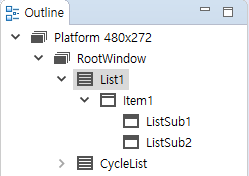

List control
Function
The list control is often used when a page cannot display all the information, and there are some consistent attribute classifications in each unit information.
Scenes
WiFi list, device list, table information
How to use
Open the UI file, create a list control, and add two list item controls to the list. Then you can see the appearance style of the list. The specific operations are as follows:

Select the list, you can see that it has the following properties

You can try to modify each property, and then download the program to the machine to view the specific changes.
Now go to the outline view

You can see that an Item node is generated by default under the list, which represents a row or column of the list, and Item contains the two ListSub nodes we added.
You can click to select each node to view their respective properties, and the scope of their effects can be seen on the preview.
Note: Each list control can add up to 32 list items.The properties of Item and List Subitem controls are similar to the Button controls. You can modify their properties separately and adjust the style. Below is the modified result using the example :

- After adjusting the general appearance of the list in the UI file, compile (How to compile the FlywizOS project). In the automatically generated correlation function, we need to add specific logic code to draw the specific content of the list.
- After compiling, in the corresponding Logic.cc source file, each list control will generate three related functions.
int getListItemCount_ListView1()： Get the length of the list to be drawn
For example: there are 100 data to be displayed, then 100 is returned.void obtainListItemData_List1： Set the specific display content of each item in the list For specific examples, see follow-up documents The above two functions jointly control the display content of the list.onListItemClick_List1： Click event of list control When clicking on an item in the list, the system will call this function, and the parameter index represents the index value of the currently clicked list item.
List drawing process
When we want to draw a list, the system first needs to know how many items it has in total, so we provide the
int getListItemCount_ListView1()function, which will be called by the system to get the length of the list (the total number of items), Note that this function is dynamically obtained. During the running of the program, we can return different values according to needs, and then we can dynamically control the length of the list.Then, the system will call the function
void obtainListItemData_ListView1(ZKListView *pListView,ZKListView::ZKListItem *pListItem, int index)multiple times. For each call, we can use the pointer provided by the parameter in this function to control the specific content of each item in detail.
- Example 1. Set the display content of the list item
static void obtainListItemData_ListView1(ZKListView *pListView,ZKListView::ZKListItem *pListItem, int index) { //The pListItem pointer represents a list item, which can only be used in this function char buf[32] = {0}; //The parameter index indicates which item of the list is currently drawn, starting from 0. //Here, we format the index value into a string snprintf(buf, sizeof(buf), "Item %d", index); //Display the string as text in the list item area pListItem->setText(buf); //If you have configured the list item "Picture when selected" in the ui file, //Then, by setting the selected state of the list item through the following line of code, you can control the list item to //display the corresponding state picture pListItem->setSelected(true); } Example 2. Set the display content of the list subitem
If we use the list subitem, we can get the pointer of the list item by the following method, and then manipulate the list item through the newly obtained pointer.static void obtainListItemData_ListView1(ZKListView *pListView,ZKListView::ZKListItem *pListItem, int index) { char buf[32] = {0}; //The parameter index indicates which item of the list is currently drawn, starting from 0. //Here, we format the index value into a string snprintf(buf, sizeof(buf), "The first child of item %d", index); //We can get the pointer of the list item through the findSubItemByID() function and the ID of the list item //Same as the pListItem pointer, the list item pointer that is found can only be used in this function ZKListView::ZKListSubItem* subitem1 = pListItem->findSubItemByID(ID_MAIN_SubItem1); if (subitem1 != NULL) { //Set the text of list item 1 subitem1->setText(buf); } snprintf(buf, sizeof(buf), "The second child of item %d", index); ZKListView::ZKListSubItem* subitem2 = pListItem->findSubItemByID(ID_MAIN_SubItem2); if (subitem2 != NULL) { //Set the text of list item 2 subitem2->setText(buf); } }
The idea of list
In our system, the list is a mapping of a series of rule data. If we want to modify the list, such as adding a piece of data, or modifying a certain item, we should modify the data first, then trigger the refresh, and then the system will automatically call obtainListItemData_ListView1 function, in this function, set the display content of the list according to the latest data.
This idea is reflected in the following example.
Sample code
We provide a sample list control, refer to the ListViewDemo project in Sample Code.
Sample explanation
Create a list control We create two list controls in turn and try to set different properties and appearances. Rotation List control: Turn on the cycle list option

Compile the project This step will automatically generate the code related to the list to the corresponding Logic.cc file.
Specific operation reference "How to compile FlywizOS project"The data structure needed to create the List1 list
In general, we will define a structure as a model for each data item in the listtypedef struct { //The text displayed in the list item const char* mainText; //The text to be displayed in list sub item 1 const char* subText; //Turn on/off logo bool bOn; } S_TEST_DATA;We define another structure array to simulate list data
static S_TEST_DATA sDataTestTab[] = { { "Test1", "testsub1", false }, { "Test2", "testsub2", false }, { "Test3", "testsub3", false }, { "Test4", "testsub4", true }, { "Test5", "testsub5", false }, { "Test6", "testsub6", true }, { "Test7", "testsub7", false }, { "Test8", "testsub8", false }, { "Test9", "testsub9", false }, { "Test10", "testsub10", false }, { "Test11", "testsub11", false } };Add list function code
static int getListItemCount_List1(const ZKListView *pListView) { //Use the length of the array as the length of the list return sizeof(sDataTestTab) / sizeof(S_TEST_DATA); } static void obtainListItemData_List1(ZKListView *pListView,ZKListView::ZKListItem *pListItem, int index) { //Get the pointer of the list sub item 1 and name it psubText ZKListView::ZKListSubItem* psubText = pListItem->findSubItemByID(ID_MAIN_ListSub1); //Get the pointer of the list sub item 2 and name it psubButton ZKListView::ZKListSubItem* psubButton = pListItem->findSubItemByID(ID_MAIN_ListSub2); pListItem->setText(sDataTestTab[index].mainText); //Take index as the subscript, get the corresponding structure from the array, get the text that needs to be displayed //from the structure, and finally set it to the corresponding list item psubText->setText(sDataTestTab[index].subText); //In the UI file, we set the selected image property for the list sub item 2 //Here, according to the `bOn` value of the structure, the selected state of the list item is set, so that if the member //`bOn` is true, it is set to be selected, and the system will automatically display the selected picture previously set psubButton->setSelected(sDataTestTab[index].bOn); } static void onListItemClick_List1(ZKListView *pListView, int index, int id) { //When you click the index item in the list, modify the bOn variable to reverse bOn. In this way, every time you click on //the list, the picture will switch once //Note that the operation of picture switching is completed in the obtainListItemData_List1 function, and now we only //modify the value of this variable. sDataTestTab[index].bOn = !sDataTestTab[index].bOn; //The last sentence of code modified the structure data, and now we want to refresh the list immediately, and call //refreshListView to force a refresh //After the refresh is triggered, the system will call the two functions getListItemCount_List1 and //obtainListItemData_List1 again, so that the modified data corresponds to the list display. mList1Ptr->refreshListView(); }- After adding the code, you can run it to see the actual effect.